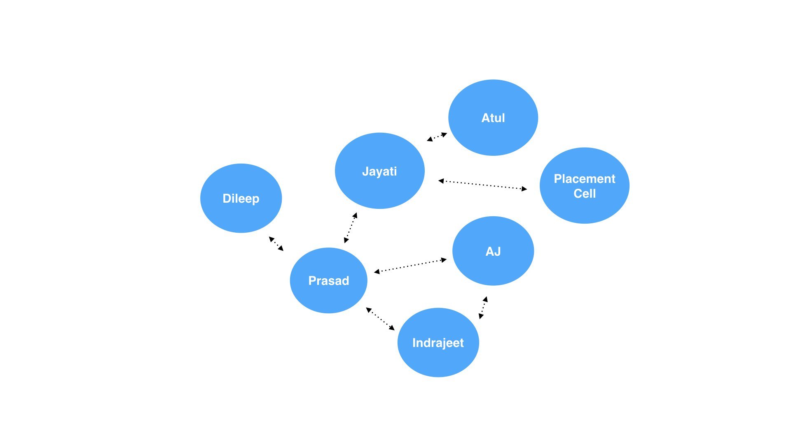

A smarter context based phonebook for Mobile Devices in collaboration with Microsoft Research
Guide : Prof. Anirudha Joshi
These days, it is normal to have over 1000 contacts in a phonebook which include phone numbers, emails and other data. We are in touch with some of these contacts frequently. We use many others rarely. The current visualisation of the phonebook data is quite old, and is essentially based on a feature phone. This project is about creating a solution that makes use of high resolution touchscreens and sensors in mobile devices to enhance the user experience. The term 'Mobile devices' has been loosely defined. The end solution is the design of a smarter phonebook that provides information about the most important contacts.
What is the most important contact right now?
The design of the phonebook has largely remained the same over the past years. Navigation and finding contacts is still based on Alphabetical Lists, Favorites, Call Logs and in some instances frequency based defaults. Our devices have become exponentially smarter, but not our phonebooks.
The following page shows different ideas and strategies that have the potential for making the Phonebook smarter. The ideas range from design of the User Interface to Designing algorithms, using machine learning techniques to solving navigation and User Experience problems.
The Pareto principle states that out of all the available information, only about 20% of it is valuable. A number of studies suggest this to be true even in the case of contact management. Out of all the contacts in the phonebook, only a handful of contacts are important at any given point of time. This number generally ranges from 10 -20 contacts, however different studies suggest a different number. Overall, only around 20% of the contacts are important for the average person.
The smartphone has the potential of storing large amount of metadata for each contact as shown in the figure below. This opens a range of possibilities in design, prediction, learning and a number of other fields. The questions we then need to then ask are ethical rather than technical.
The more recent the interaction, the more long term the interaction, the more important is the contact. Recency may indicate temporary importance while longevity indicates certain importance.
The importance of a particular contact may also depend on the current context of the user. Some contacts are important in certain locations, at certain times, often a combination of both. The importance may also depend on the closeness or relatedness of a contact to another contact. All this information can often be coupled with recency and longevity patterns to find out who is important to me right now. This data can be used to predict the most important contacts and visualize the same for the phonebook.
The following figure indicates different types of contacts that may be important at different time durations in a 24 hour time span for a typical office goer.
To find out patterns in contact storage, a user study was conducted with a group of users. There were certain repeating patterns found in the contacts storage. These were thought to be not very useful in the beginning. Different users stored the same contact with different names and information. One can however generate groups from the semantic structure of different contact names; an idea that will be explored later in the project.
One of the ideas consists of creating a widget in the existing standard phonebook structure that predicts a set of contacts based on the context of the user. This idea mainly employs bayesian networks and machine learning to predict which contacts are most important currently. Different types of contacts would be predicted during the different times of the day.
Additional features includes the contact view which shows contacts related to the particular contact and smart defaults (like sending a birthday wish) based on the contact's information.
"Design of the phonebook is a 5 Billion People problem. On a macro scale, saving a few seconds will save a few lifetimes."
The ideas presented in the version 1.0 are based on secondary data and my intuition. However, on further heuristic evaluations, user studies and using realistic data from the my call and email log for a period of 3 months; patterns start emerging in the data. The following ideas tackle different issues of visualization, getting an overview, navigation problems etc.
The very first thing I did on getting hands on the interaction data was to create a histogram. Different views were generated for the histogram. What if you could see your phonebook as a histogram ? What if navigation was done by means of a histogram ? What if it could show details of your interactions and based on the same create groups ? An algorithm similar to the MIT Media Lab's Immersion Project was used to generate the groups.
Although fun at the beginning, the design did not really solve any fundamental problems and was quickly discarded.
The 24hr prediction concept mentioned earlier was expanded into a calendar view. Navigation of contacts would be done through this month long / year long view. Similar views are available for visualizations generated by fitness applications (heart rate, sleep patterns etc.). This also was an interesting visualization idea and parts of it were thought to be useful. However, it is more of an added micro-interaction in the existing phonebook rather than a full systemic design change.
How many times does it happen that you are trying to find a contact you saved (or worse, you did not save!), but you forget the name. You probably know other information like when had you called the contact, where you were when you called, who else did you call. In short, you know the context of the call. This idea proposes an additional navigation of the phonebook by means of filters (date, time, people, location, day). Concepts from previous design ideas may be borrowed. This idea can be explained better by means of scenarios. The scenarios describe the problem and the graphic describes the possible solutions.
Scenario 1: Search based on person/s
If I have to search for placement related mails. I will do a search of Atul, who is the placement manager along with Jayati who is the placement coordinator.
Scenario 2: Search based on day and time
I had called the Dhobi on a day before my birthday between 12-2 pm. I do not have the Dhobi’s Number and urgently need it.
Scenario 3: Search based on People/s, Date Range, Day, Time
Tapan had called me to give his clothes to the Dhobi between 4-5 am some 2 weeks back. I called the Dhobi between 12-2 pm on the same day. I do not have the Dhobi’s number and urgently need it.
The solution proposed is an advanced filter. Additional filters of location data may be added. The way in which a contact is found would depend on the type of user. It is very well possible that a user scrolls endlessly till he finds the needed contact. However I believe that even though simple things should be simple, complex actions need to be possible.
This idea derives inspiration from the Phoneman paper where you predict the next possible action after the current action. For example, after using the phonebook the next action would probably be using the calendar or creating a reminder. In similar fashion, the contact data reveals patterns in calling certain individuals. After calling a specific person, I am prone to make the next call / interaction with a specific group of people. This data can be used to predict and suggest the next possible contact.

A friend of mine with a generic name (Akshay, Sagar, Prasad etc.) recently told me that whenever his father wants to call him he has to type the son's name completely since there are a lot of people with the same name. The following idea germinates from this problem. It consists of a simple grid of alphabets for navigation. On selecting a particular alphabet, the screen shows a grid of people with names starting (this is given preference) or containing the alphabet with the alphabet. The size of each element in the grid is determined by the importance of the contact based of frequency, recency and longevity patterns discussed earlier.
Contacts, Phonebook, Call, Log, Visualization, Algorithm, Machine Learning, Grid, Personal Information Management, Dataviz, User Interface, User Experience, User Studies, Microinteraction, Affinity Mapping, Information Design, Big Data, Interaction Design, Application, Wireframe, Prototype, Wearable, Android, Phone, Wear, App, IITB, Bombay, Indian Institute of Technology